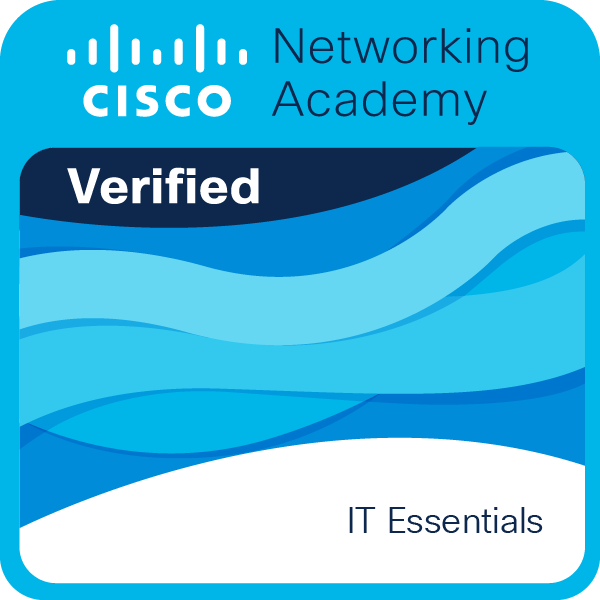

J'ai obtenu la certification PIX dans le cadre de mon BTS SIO avec un nombre de 524 Points PIX sur un niveau global Avancé 1 !
Introduction à l'IA moderne
Apprendre l'utilisation de l'IA dans la vie quotidienne, à créer des invites efficaces pour chatbots et à utiliser la vision par ordinateur et la traduction automatique.
Support et sécurité des réseaux
Développement des compétences en matière de dépannage réseau et de contrôle d'accès des utilisateurs.
IT Essentials
Construire les bases de l'informatiques et acquérir des compétences pratiques en matériels, logiciel, réseau et sécurité.

Introduction à la Cybersécurité
Apprendre les bases de la Cybersécurité pour protéger la vie numérique personnelle et des aperçus des plus grand défis auxquels les entreprises
sont confrontés aujourd'hui.